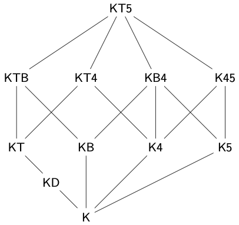
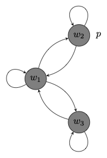

10 Axiomatic Derivations
We now aim for an alternative characterization of the set of formulas of \(\mathcal{L}^\Box\) that are valid in different classes of frames. We will begin with a system K, whose theorems are all and only formulas of \(\mathcal{L}^\Box\) that are valid in every frame. We will later consider extensions of that system, whose theorems are all and only formulas valid in every frame in a certain class, e.g., reflexive, symmetric, transitive, etc.
The Minimal Modal Logic K
The system consists of an infinite set of axioms and two rules of inference.
Definition 10.1 (The System K) The minimal modal logic \(K\) is an axiom system with an infinite set of axioms and two rules of inference. The axioms of \(K\) include:
substitution instances of tautologis of propositional logic
substitution instances of the axiom: \[\tag{K} \Box(p \to q) \to (\Box p \to \Box q)\\ \]
The rules of inference of \(K\) include:
- Modus Ponens (MP):
\[\tag{MP} \varphi, (\varphi \to \psi)/\psi %\text{If} \ \vdash \varphi \ \text{and} \ \vdash (\varphi \to \psi), \ \text{then} \ \vdash \psi \]
- Necessitation (N)
\[\tag{N} \varphi/\Box \varphi %\text{If} \ \vdash \varphi \ \text{then} \ \vdash \Box \varphi \]
We explain what is for a finite sequence of formulas to be a proof in the axiom system we just now introduced:
Definition 10.2 (Proof in K) A proof or derivation in the axiom system \(K\) is, as usual, a finite sequence of formulas \((\chi_1, \dots, \chi_n)\) of \(\mathcal{L}^\Box\), each of them
- an axiom of \(K\)
- the outcome of an application of MP to two prior formulas
- the outcome of an application of N to a prior formula
The theorems of \(K\) those formulas of \(\mathcal{L}^\Box\) for which there is a proof in the system:
Definition 10.3 (Theorem of K) A formula \(\varphi\) of \(\mathcal{L}^\Box\) is a theorem of \(K\), written \(\vdash_K \varphi\), if, and only if, some proof in K ends with the formula \(\varphi\).
The axioms of the minimal modal logic \(K\) are valid in all frames, and the rules of inference preserve validity in all frames. So, every theorem of \(K\) is valid in every frame.
Example 10.1 A substitution instance of axiom \(K\) is valid in all frames. \[\tag{K} \Box(p \to q) \to (\Box p \to \Box q)\\ \] Consider a substitution instance of axiom \(K\): \[ \Box (\varphi \to \psi) \to (\Box \varphi \to \Box \psi). \] Let \((W, R)\) be a frame and let \((W, R, V)\) be a model based on that frame. We argue that \((W,R,V) \models \Box (\varphi \to \psi) \to (\Box \varphi \to \Box \psi)\). To that end, let \(w \in W\) and suppose that \((W,R,V), w \Vdash \Box (\varphi \to \psi)\) and \((W,R,V), w \Vdash \Box \varphi\). If \(u\in W\) is such that \(Rwu\), then \((W,R,V), u \Vdash \varphi \to \psi\) and \((W,R,V) \Vdash \varphi\). Therefore, \((W,R,V), u \Vdash \psi\). Generalizing, we find \((W,R,V), w \Vdash \Box \psi\).
How to Construct Proofs
While it is a purely mechanical procedure to check whether a finite sequence of formulas is a proof in a given system, it may take some skill and experience to find one. There is no perfectly general recipe for this, but as a general piece of advice, it helps to spend some time considering the question of why the formula should be valid. Since proofs and theorems of \(K\) track validity in all frames, the question of validity may on occasion guide us to a proof.
One important observation at this poins is that we are entitled to propositional inferences within the system. If two formulas are propositionally equivalent, then you should feel free to move from one to the other. Here is a formal justification of that fact.
Proposition 10.1 If \(\vdash_K \varphi_1, \dots, \vdash_K \varphi_n\) and \(\psi\) is derivable from \(\{\varphi_1, \dots, \varphi\}\) in propositional logic, then \(\vdash_K \psi\).
Proof. Given the Deduction Theorem for Propositional Logic, if \(\psi\) is derivable from \(\{\varphi_1, \dots, \varphi\}\) in propositional logic, then \(\varphi_1 \to (\varphi_2 \to (\dots (\varphi_n \to \psi)\dots))\) is a theorem of propositional logic and thus a theorem of \(K\). By repeated applications of Modus Ponens, we infer \(\vdash_K \psi\).
In what follows, we will use the annotation ‘PL’ to indicate that a line is justified by propositional logic or by propositional logic applied to some prior lines.
Distribution Rules
We are similarly able to justify derived rules of inference, which will help us take a more direct route between two steps in a proof.
Proposition 10.2 If \(\vdash_K \varphi \to \psi\), then \(\vdash_K \Box \varphi \to \Box \psi\).
Proof. We may transform a derivation of \(\varphi \to \psi\) into a derivation of \(\varphi \to \Box \psi\). \[ \begin{array}{lllll} 1 & & \varphi \to \psi & \text{Given}\\ 2 & & \Box (\varphi \to \psi) & \text{RN} \ 1\\ 3 & & \Box (\varphi \to \psi) \to (\Box \varphi \to \Box \psi) & K[\varphi/p, \psi/q]\\ 4 & & \Box \varphi \to \Box \psi & \text{MP} \ 2, 3\\ \end{array} \]
This justifies a derived rule of inference we annotate RK: \[\tag{RK} \text{If} \ \vdash \varphi \to \psi \ \text{then} \ \vdash \Box \varphi \to \Box \psi \] We are now able to justify a related rule of inference: \[\tag{RK$\Diamond$} \text{If} \ \vdash \varphi \to \psi \ \text{then} \ \vdash \Diamond \varphi \to \Diamond \psi \]
Proposition 10.3 If \(\vdash_K \varphi \to \psi\), then \(\vdash_K \Diamond \varphi \to \Diamond \psi\).
Proof. We may transform a proof of \(\varphi \to \psi\) into a proof of \(\Diamond \varphi \to \Diamond \psi\) \[ \begin{array}{lllll} 1 & & \varphi \to \psi & \text{Given}\\ 2 & & \neg \psi \to \neg \varphi & \text{PL} \ 1 \\ 3 & & \Box \neg \psi \to \Box \neg \varphi & \text{RK} \ 2 \\ 4 & & \neg \Box \neg \varphi \to \neg \Box \neg \psi & \text{PL} \ 3\\ 7 & & \Diamond \varphi \to \Diamond \psi & \text{Def} \ \Diamond \ 4\\ \end{array} \]
More generally, if \(Q\) is a string of modal operators, we are in a position to justify the derived rule of inference:
\[\tag{RKQ} \text{If} \ \vdash_K \varphi \to \psi \ \text{then} \ \vdash_K Q \varphi \to Q \psi \]
Example 10.2 Consider the derived rule of inference:
\[\tag{RK$\Box \Diamond$} \text{If} \ \vdash_K \varphi \to \psi \ \text{then} \ \vdash_K \Box \Diamond \varphi \to \Box \Diamond \psi \] We may transform a derivation of \(\varphi \to \psi\) into a derivation of \(\Box \Diamond \varphi \to \Box \Diamond \psi\): \[\begin{array}{lllll} 1 & & \varphi \to \psi & \text{Given}\\ 2 & & \Diamond \varphi \to \Diamond \psi & \text{RK}\Diamond \ 1\\ 3 & & \Box \Diamond \varphi \to \Box \Diamond \psi & \text{RK} \ 2\\ \end{array}\]Some Theorems of K
We may exploit some of these derived rules in order to prove some theorems of \(K\).
Proposition 10.4 \(\vdash_K \Box (\varphi \to \psi) \to (\Diamond \varphi \to \Diamond \psi)\)
Proof. \[ \begin{array}{lllll} 11 & & (\varphi \to \psi) \to (\neg \psi \to \neg \varphi) & \text{PL} \\ 2 & & \Box (\varphi \to \psi) \to \Box(\neg \psi \to \neg \varphi) & \text{RK} \ 1 \\ 3 & & \Box (\neg \psi \to \neg \varphi) \to (\Box \neg \psi \to \Box \neg \varphi) & \text{K}[\neg \psi/p, \neg \varphi/q] \\ 4 & & (\Box \neg \psi \to \Box \neg \varphi) \to (\neg \Box \neg \varphi \to \neg \Box \neg \psi) & \text{PL}\\ 5 & & \Box (\varphi \to \psi) \to (\neg \Box \neg \varphi \to \neg \Box \neg \psi) & \text{PL} \ 2, 3, 4\\ 6 & & \Box (\varphi \to \psi) \to (\Diamond \varphi \to \Diamond \psi) & \text{Def} \ \Diamond \ 6\\ \end{array} \]
Example 10.3 Given those observations, it is simple to justify:
\(\vdash_K \Diamond p \wedge \Box (p \to q) \to \Diamond q\)
The crucial observation is that the formula \(\Diamond p \wedge \Box (p \to q) \to \Diamond q\) is propositionally equivalent to \(\Box (p \to q) \to (\Diamond p \to \Diamond q)\). So, a proof of the latter immediately gives us a proof of the former.
Other well-known theorems of the minimal logic K are principles such as the distribution of \(\Box\) over \(\wedge\) and the distribution of \(\Diamond\) over \(\vee\).
Proposition 10.5 \(\vdash_K \Box(\varphi \wedge \psi) \to (\Box \varphi \wedge \Box \psi)\)
Proof. The key to this proof is to find appropriate tautologies on which to apply a distribution rule. \[ \begin{array}{lllll} 1 & & (\varphi \wedge \psi) \to \varphi & \text{PL} \\ 2 & & \Box (\varphi \wedge \psi) \to \Box \varphi & \text{RK} \ 1 \\ 3 & & (\varphi \wedge \psi) \to \psi & \text{PL} \\ 4 & & \Box (\varphi \wedge \psi) \to \Box \psi & \text{RK} \ 3 \\ 5 & & \Box (\varphi \wedge \psi) \to (\Box \varphi \wedge \Box \psi) & \text{PL} \ 2, 4\\ \end{array} \]
Proposition 10.6 \(\vdash_K (\Box \varphi \wedge \Box \psi) \to \Box (\varphi \wedge \psi)\)
Proof. This proof combines the use of a distribution rule with an instance of K. \[ \begin{array}{lllll} 1 & & \varphi \to (\psi \to (\varphi \wedge \psi)) & \text{PL} \\ 2 & & \Box \varphi \to \Box (\psi \to (\varphi \wedge \psi)) & \text{RK} \ 1\\ 3 & & \Box (\psi \to (\varphi \wedge \psi)) \to (\Box \psi \to \Box (\varphi \wedge \psi)) & \text{K}[\psi/p, (\varphi \wedge \psi)/q]\\ 4 & & \Box \varphi \to (\Box \psi \to \Box (\varphi \wedge \psi)) & \text{PL} \ 2, 3\\ 5 & & (\Box \varphi \wedge \Box \psi) \to \Box (\varphi \wedge \psi) & \text{PL} \ 4\\ \end{array} \]
Proposition 10.7 \(\vdash_K (\Diamond \varphi \vee \Diamond \psi) \to \Diamond (\varphi \vee \psi)\)
Proof. The strategy behind the proof is to exploit the fact that \(\Diamond\) is a dual of \(\Box\), that is, \(\Diamond\) is \(\neg \Box \neg\), and the fact that the negation of a disjunction is propositionally equivalent to a conjunction of negations. When we combine them with the fact that \(\Box\) distributes over \(\wedge\), we have a proof ot the principle.
\[ \begin{array}{lllll} 1 & & \neg \Diamond (\varphi \vee \psi) \to \neg \neg \Box \neg (\varphi \vee \psi) & \text{Def} \ \Diamond\\ 2 & & \neg \Diamond (\varphi \vee \psi) \to \Box \neg (\varphi \vee \psi) & \text{PL} \ 1\\ 3 & & \neg (\varphi \vee \psi) \to (\neg \varphi \wedge \neg \psi) & \text{PL}\\ 4 & & \Box \neg (\varphi \vee \psi) \to \Box (\neg \varphi \wedge \neg \psi) & \text{RK} \ 3\\ 5 & & \Box (\neg \varphi \wedge \neg \psi) \to (\Box \neg \varphi \wedge \Box \neg \psi) & \text{Prop} \ 7.5\\ 6 & & (\Box \neg \varphi \wedge \Box \neg \psi) \to \neg (\neg \Box \neg \varphi \vee \neg \Box \neg \psi) & \text{PL} \\ 7 & & \neg (\neg \Box \neg \varphi \vee \neg \Box \neg \psi) \to \neg (\Diamond \varphi \vee \Diamond \psi) & \text{Def} \ \Diamond\\ 8 & & \Box \neg (\varphi \vee \psi) \to \neg (\Diamond \varphi \vee \Diamond \psi) & \text{PL} \ 5, 6, 7\\ 9 & & \neg \Diamond (\varphi \vee \psi) \to \neg (\Diamond \varphi \vee \Diamond \psi) & \text{PL} \ 2, 8\\ 10 & & (\Diamond \varphi \vee \Diamond \psi) \to \Diamond (\varphi \vee \psi) & \text{PL} \ 9\\ \end{array} \]
Proposition 10.8 \(\vdash_K \Diamond (\varphi \vee \psi) \to (\Diamond \varphi \vee \Diamond \psi)\)
Proof. This time we exploit the fact that a conjunction of necessitations entails the necessitation of a conjunction. \[ \begin{array}{lllll} 1 & & \neg (\Diamond \varphi \vee \Diamond \psi) \to \neg (\neg \Box \neg \varphi \vee \neg \Box \neg \psi) & \text{Def} \ \Diamond \\ 2 & & \neg (\neg \Box \neg \varphi \vee \neg \Box \neg \psi) \to (\Box \neg \varphi \wedge \Box \neg \psi) & \text{PL} \\ 3 & & (\Box \neg \varphi \wedge \Box \psi) \to \Box (\neg \varphi \wedge \neg \psi) & \text{Prop} \ 7.6\\ 4 & & \neg (\Diamond \varphi \vee \Diamond \psi) \to \Box (\neg \varphi \wedge \neg \psi) & \text{PL} \ 1, 2, 3\\ 5 & & (\neg \varphi \wedge \neg \psi) \to \neg (\varphi \vee \psi) & \text{PL} \\ 6 & & \Box (\neg \varphi \wedge \neg \psi) \to \Box \neg (\varphi \vee \psi) & \text{RK} \ 5 \\ 7 & & \neg (\Diamond \varphi \vee \Diamond \psi) \to \Box \neg (\varphi \vee \psi) & \text{PL} \ 4, 6\\ 8 & & \Box \neg (\varphi \vee \psi) \to \neg \neg \Box \neg (\varphi \vee \psi) & \text{PL} \\ 9 & & \neg \neg \Box \neg (\varphi \vee \psi) \to \neg \Diamond (\varphi \vee \psi) & \text{Def} \ \Diamond\\ 10 & & \neg (\Diamond \varphi \vee \Diamond \psi) \to \neg \Diamond (\varphi \vee \psi) & \text{PL} \ 7, 8, 9\\ 11 & & \Diamond (\varphi \vee \psi) \to (\Diamond \varphi \vee \Diamond \psi) & \text{PL} \ 10 \end{array} \]
We conclude with another helpful theorem of K.
Proposition 10.9 \(\vdash_K (\Diamond \varphi \wedge \Box \psi) \to \Diamond (\varphi \wedge \psi)\)
Proof. \[ \begin{array}{lllll} 1 & & \neg (\varphi \wedge \psi) \to (\psi \to \neg \varphi) & \text{PL} \\ 2 & & \Box \neg (\varphi \wedge \psi) \to \Box (\psi \to \neg \varphi) & \text{RK} \ 1 \\ 3 & & \Box (\psi \to \neg \varphi) \to (\Box \psi \to \Box \neg \varphi) & \text{K}[\psi/p, \neg \varphi/q] \\ 4 & & \Box \neg (\varphi \wedge \psi) \to (\Box \psi \to \Box \neg \varphi) & \text{PL} \ 2, 3\\ 5 & & \neg (\Box \psi \to \Box \neg \varphi) \to \neg \Box \neg (\varphi \wedge \psi) & \text{PL} \ 4 \\ 6 & & \neg (\Box \psi \to \Box \neg \varphi) \to \Diamond (\varphi \wedge \psi) & \text{Def} \ \Diamond \\ 7 & & (\Box \psi \wedge \neg \Box \neg \varphi) \to \neg (\Box \psi \to \Box \neg \varphi) & \text{PL} \\ 8 & & (\Box \psi \wedge \neg \Box \neg \varphi) \to \Diamond (\varphi \wedge \psi) & \text{PL} \ 6, 7\\ 9 & & (\Box \psi \wedge \Diamond \varphi) \to (\Box \psi \wedge \neg \Box \neg \varphi) & \text{Def} \ \Diamond\\ 10 & & (\Diamond \varphi \wedge \Box \psi) \to (\Box \psi \wedge \Diamond \varphi) & \text{PL} \\ 11 & & (\Diamond \varphi \wedge \Box \psi) \to \Diamond (\varphi \wedge \psi) & \text{PL} \ 8, 9, 10\\ \end{array} \]
Part of the interest of the minimal modal logic \(K\) is that it provides an alternative characterization of the set of validities in all frames. That is, we will eventually prove that a formula \(\varphi\) of \(\mathcal{L}^\Box\) is a theorem of \(K\) if, and only if, \(\varphi\) is valid in all frames. Before we do, however, we will consider some extensions of the minimal modal logic.
Normal Modal Systems
We will focus on extensions of the minimal modal logic that result from \(K\) when we supplement its axioms with all substitution instances of further modal axioms.
Definition 10.4 (Normal Modal Logic) A normal modal \(\Sigma\) logic is an axiom system, which results from \(K\) when we add to its axioms all substitution instances of further modal axioms.
Example 10.4 The modal logic \(KT\) is the system which results from the minimal modal logic \(K\) when we supplement its axioms with all substitution instances of the axiom: \[\tag{T} \Box p \to p \] The theorems of the normal modal logic \(KT\) those formulas of \(\mathcal{L}^\Box\) for which there is a proof in the system \(KT\). We write \(\vdash_{KT} \varphi\) to indicate that \(\varphi\) is a theorem of \(T\).
Two notable normal modal systems are \(S4\) and \(S5\), respectively:
Example 10.5 The modal logic \(S4\) is the system which results from the minimal modal logic \(K\) when we supplement its axioms with all substitution instances of the axioms: \[\tag{T} \Box p \to p \] \[\tag{4} \Box p \to \Box \Box p \] The theorems of the normal modal logic \(S4\) those formulas of \(\mathcal{L}^\Box\) for which there is a proof in the system \(S4\). We write \(\vdash_{S4} \varphi\) to indicate that \(\varphi\) is a theorem of \(T\).
Example 10.6 The modal logic \(S5\) is the system which results from the minimal modal logic \(K\) when we supplement its axioms with all substitution instances of the axioms: \[\tag{T} \Box p \to p \] \[\tag{5} \Diamond p \to \Box \Diamond p \] The theorems of the normal modal logic \(S5\) those formulas of \(\mathcal{L}^\Box\) for which there is a proof in the system \(S5\). We write \(\vdash_{S5} \varphi\) to indicate that \(\varphi\) is a theorem of \(S5\).
Modal Duality
The axioms below are interderivable from their modal duals:
| \(T\) | \(\Box p \to p\) | \(p \to \Diamond p\) | \(T_\Diamond\) |
| \(B\) | \(p \to \Box \Diamond p\) | \(\Diamond \Box p \to p\) | \(B_\Diamond\) |
| \(4\) | \(\Box p \to \Box \Box p\) | \(\Diamond \Diamond p \to \Diamond p\) | \(4_\Diamond\) |
| \(5\) | \(\Diamond p \to \Box \Diamond p\) | \(\Diamond \Box p \to \Box p\) | \(5_\Diamond\) |
Example 10.7 Consider the interderivability of \(T_\Diamond\) from \(T\):
\(KT \vdash T_\Diamond\)
\[ \begin{array}{lllll} 1 & & \Box \neg p \to \neg p & T[\neg p/p]\\ 2 & & \neg \neg p \to \neg \Box \neg p & \text{PL} \ 1\\ 3 & & \neg \neg p \to \Diamond p & \text{Def} \ \Diamond \ 2 \\ 4 & & p \to \Diamond p & \text{PL} \ 3 \\ \end{array} \]
\(KT_\Diamond \vdash T\)
\[ \begin{array}{lllll} 1 & & \neg p \to \Diamond \neg p & T_\Diamond[\neg p/p]\\ 2 & & \neg p \to \neg \Box \neg \neg p & \text{Def} \ \Diamond \ 1 \\ 3 & & \neg \neg \Box \neg \neg p \to \neg \neg p & \text{PL} \ 2 \\ 4 & & \Box \neg \neg p \to \neg \neg p & \text{PL} \ 3 \\ 5 & & p \to \neg \neg p & \text{PL} \\ 6 & & \Box p \to \Box \neg \neg p & \text{RK} \ 5 \\ 7 & & \Box p \to p & \text{PL} \ 4, 6 \\ \end{array} \]
The equivalence proof is completely parallel in all other cases.
We are in a position to compare the deductive strength of different normal modal systems. In what follows, we aim to develop an overview of the landscape of normal modal systems for propositional modal logic.
Definition 10.5 (Extension) A modal system \(\Sigma\) extends another modal system \(\Delta\), written \(\Delta \sqsubseteq \Sigma\), if, and only if, every theorem of \(\Delta\) is a theorem of \(\Sigma\). Or, in other words, for every formula \(\varphi\) of \(\mathcal{L}^\Box\), \[ \text{If} \ \vdash_{\Delta} \varphi \ \text{then} \ \vdash_{\Sigma} \varphi \] A modal system \(\Sigma\) is a proper extension of \(\Delta\), written \(\Delta \sqsubset \Sigma\) if, and only if, \(\Delta \sqsubseteq \Sigma\) but \(\Sigma \not \sqsubseteq \Delta\).
Here is a graphical representation of some of the relations in which eleven normal modal systems stand to. each other. Each edge connects a modal system with a proper extension located above in the diagram.
|  |
| Landscape of normal modal systems |
There are two main techniques we use in order to justify the diagram. To argue that a modal system \(\Sigma\) extends a system \(\Delta\), we argue that every axiom of \(\Delta\) is a theorem of \(\Sigma\).
Proposition 10.10 \(\Delta \sqsubseteq \Sigma\) if \(\Sigma\) proves every axiom of \(\Delta\).
Proof. Since \(\Delta\) and \(\Sigma\) share the same rules of inference, if every axiom of \(\Delta\) is a theorem of \(\Sigma\), then every theorem of \(\Delta\) is a theorem of \(\Sigma\).
Example 10.8 \(KD \sqsubseteq KT\)
This is because \(\vdash_{KT} \Box \varphi \to \Diamond \varphi\). \[ \begin{array}{lllll} 1 & & \Box \varphi \to \varphi & T[\varphi/p] \\ 2 & & \varphi \to \Diamond \varphi & T_\Diamond[\varphi/p]\\ 3 & & \Box \varphi \to \Diamond \varphi & PL \ 1, 2\\ \end{array} \]
There is a semantic counterpart to this observation. We will eventually observe that each normal modal system characterizes the set of validities in a certain class of frames. In fact, each node in the earlier diagram corresponds to a class of formulas valid in a specific class of frames:
 |
| Classes of frames |
We will, for example, explain that the normal modal systems \(KT\) and \(KD\) are sound and complete with respect to the class of reflexive and serial frames, respectively. That means that the theorems of \(KT\) are exactly those formulas that are valid in all reflexive frames. And the theorems of \(KD\) are the formulas that are valid in all serial frames. Now:
Proposition 10.11 Every reflexive frame is serial.
That means that if a formula is valid in all serial frames, then it will be valid in all reflexive frames. The soundness and completeness theorems for \(KD\) and \(KT\) will deliver a semantic route to the conclusion that every theorem of \(KD\) is a theorem of \(KT\).
On the other hand, the fact that \(T\) defines the class of reflexive frames suggests a semantic argument for the conclusion that \(KD\) does not extend \(KT\).
Proposition 10.12 If every theorem of \(\Sigma\) is valid in every frame in \(\mathcal{C}\), then \(\Delta\not \sqsubseteq \Sigma\) if not every axiom of \(\Delta\) is valid in every frame in \(\mathcal{C}\).
Proof. If an axiom \(\varphi\) of \(\Delta\) is not valid in every frame in \(\mathcal{C}\), then \(\varphi\) is not a theorem of \(\Sigma\). That means that not every theorem of \(\Delta\) is a theorem of \(\Sigma\).
Since the theorems of \(KD\) are valid in all serial frames, the observation that \(\Box p \to p\), which is an axiom of \(KT\), is not valid in some serial frames tells us that \(KT\) is a proper extension of \(KD\).
Example 10.9 \(KT \not \sqsubseteq KD\)
This is because \(\Box p \to p\) is not valid in every serial frame. To that purpose, consider the model based on a serial frame depicted below.
 |
| \((W, R, V), w_1 \nVdash \Box p \to p\) |
We may similarly use the fact that axiom 4 is not valid in every reflexive and symmetric frame to establish that some theorems of \(KB5\) are not theorems of \(KTB\).
Example 10.10 \(KB5 \not \sqsubseteq KTB\)
This is because \(\Diamond p \to \Box \Diamond p\) is not valid in every reflexive and symmetric frame. To that purpose, consider the model based on a reflexive and symmetric frame depicted below.
|  |
| \((W, R, V), w_1 \nVdash \Diamond p \to \Box \Diamond p\) |
Where should we locate \(KB5\) in the diagram? We now argue that \(KB4\) and \(KB5\) are mutual extensions of each other, which is the reason we do not have a further node for \(KB5\) in the diagram:
Example 10.11 \(KB4 \sqsubseteq KB5\)
This is because \(\vdash_{KB5} \Box \varphi \to \Box \Box \varphi\).
\[ \begin{array}{lllll} 1 & & \Box \varphi \to \Box \Diamond \Box \varphi & B[\Box \varphi/p]\\ 2 & & \Diamond \Box \varphi \to \Box \varphi & 5_\Diamond [\varphi/p]\\ 3 & & \Box \Diamond \Box \varphi \to \Box \Box \varphi & RK \ 2 \\ 4 & & \Box \varphi \to \Box \Box \varphi & PL 1, 3\\ \end{array} \]
Example 10.12 \(KB5 \sqsubseteq KB4\)
This is because \(\vdash_{KB4} \Diamond \varphi \to \Box \Diamond \varphi\).
\[ \begin{array}{lllll} 1 & & \Diamond \varphi \to \Box \Diamond \Diamond \varphi & B[\diamond \varphi/p]\\ 2 & & \Diamond \Diamond \varphi \to \Diamond \varphi & 4_\Diamond[\varphi/p] \\ 3 & & \Box \Diamond \Diamond \varphi \to \Box \Diamond \varphi & RK \ 2\\ 4 & & \Diamond \varphi \to \Box \Diamond \varphi & PL \ 1, 3\\ \end{array} \]
Example 10.13 \(KB4 = KB5\)
This is an immediate consequence of the last two examples.
The Reduction of Pure Modalities
We conclude the survey of the landscape of normal modal logics with a discussion of two salient normal systems, \(KT4\) (\(S4\)), and \(KT5\) (\(S5\)), and their ability to collapse certain iterations of modalities.
S4
The normal modal logic \(S4\) results from \(K\) when we supplement its axioms with all substitution instances of the axioms: \[\tag{T} \Box p \to p \] \[\tag{4} \Box p \to \Box \Box p \]
Neither KTB nor KB4 extend S4.
Proposition 10.13 \(S4 \not \sqsubseteq KTB\)
Proof. This is because axiom 4, \(\Box p \to \Box \Box p\), is not valid in every reflexive and symmetric frame, witness the model we used in example 7.10.
| \((W, R, V), w_1 \nVdash \Box p \to \Box \Box p\) |
Proposition 10.14 \(S4 \not \sqsubseteq KB4\)
Proof. This is because axiom T, \(\Box p \to p\), is not valid in every symmetric and transitive frame. To that purpose, consider the model based on a symmetric and transitive frame depicted below.
 |
| \((W, R, V), w_1 \nVdash \Box p \to p\) |
On the other hand, \(S4\) extends neither \(KTB\) nor \(KB4\).
Proposition 10.15 \(KB4 \not \sqsubseteq S4\) and \(KTB \not \sqsubseteq S4\)
Proof. This is because axiom B, \(p \to \Box \Diamond p\). is not valid in every reflexive and transitive frame. To that purpose, consider the model based on a reflexive and transitive frame depicted below.
 |
| \((W, R, V), w_1 \nVdash p \to \Box \Diamond p\) |
One reason \(S4\) is of interest is that its axioms have seemed plausible to some on certain interpretations of the modal operators, e.g., in terms of knowledge and metaphysical modality. But another reason to consider \(S4\) is that it allows one to collapse certain iterations of modalities.
Definition 10.6 (Pure Modality) A pure modality is a finite iteration of zero or more occurrences of the modal operators \(\Box\) and \(\Diamond\).
Definition 10.7 (Entailment) A modality \(\alpha\) entails a modality \(\beta\) relative to a modal system \(\Sigma\) if, and only if, \[ \vdash_{\Sigma} \alpha \varphi \to \beta \varphi. \]
Definition 10.8 (Equivalence) A modality \(\alpha\) is equivalent to a modality \(\beta\) relative to a modal system \(\Sigma\) if, and only if, \[ \vdash_{\Sigma} \alpha \varphi \leftrightarrow \beta \varphi. \]
One way in which a normal modal system may enable one to reduce a pure modality to another is by means of one of four main reduction laws: \[ \begin{array}{lll} R1 & \Diamond \Diamond \varphi \leftrightarrow \Diamond \varphi \\ R2 & \Box \Box \varphi \leftrightarrow \Box \varphi \\ R3 & \Diamond \Box \varphi \leftrightarrow \Box \varphi \\ R4 & \Box \Diamond \varphi \leftrightarrow \Diamond \varphi \\ \end{array} \]
Example 10.14 If a normal modal system \(\Sigma\) proves all four reduction laws, then \(\Sigma\) allows one to collapse a modal formula such as \(\neg \Box \Box \Diamond \neg \Box \Diamond \varphi\) into the much simpler \(\Diamond \varphi\).
We use the definition of \(\Diamond\) in terms of \(\neg\) and \(\Box\) and a rule of replacement for equivalent modal formulas to bring occurrences of negation to the front: \[ \begin{array}{rl} \neg \Box \Box \Diamond \neg \Box \Diamond \varphi &\\ \neg \Box \Box \neg \Box \neg \neg \Box \Diamond \varphi &\\ \neg \Box \Box \neg \Box \Box \Diamond \varphi &\\ \neg \Box \neg \neg \Box \neg \Box \Box \Diamond \varphi &\\ \Diamond \Diamond \Box \Box \Diamond \varphi &\\ \end{array} \] The four reduction laws now allow us to reduce each pure modality of depth greater than one to one with one fewer pure modality. \[ \begin{array}{rl} \Diamond \Box \Box \Diamond \varphi & R1\\ \Box \Box \Diamond \varphi & R3\\ \Box \Diamond \varphi & R2\\ \Diamond \varphi & R4\\ \end{array} \] So, the initial modal formula \(\neg \Box \Box \Diamond \neg \Box \Diamond \varphi\) is in fact equivalent to \(\Diamond \varphi\) relative to \(\Sigma\).
For the general study of pure modalities, we distinguish two directions in each of the four reduction laws: \[ \begin{array}{lll} R1a & \Diamond \varphi \to \Diamond \Diamond \varphi & R1b & \Diamond \Diamond \varphi \to \Diamond \varphi \\ R2a & \Box \Box \varphi \to \Box \varphi & R2b & \Box \varphi \to \Box \Box \varphi\\ R3a & \Box \varphi \to \Diamond \Box \varphi & R3b & \Diamond \Box \varphi \to \Box \varphi \\ R4a & \Box \Diamond \varphi \to \Diamond \varphi & R4b & \Diamond \varphi \to \Box \Diamond \varphi \\ \end{array} \]
We are now in a position to explain how different normal modal systems enable us to collapse some iterations of pure modalities into simpler ones.
Proposition 10.16 \(KT\) delivers \(R1a\), \(R2a\), \(R3a\), and \(R4a\).
Proposition 10.17 \(S4\) delivers \(R1\), \(R2\), \(R3a\), and \(R4a\).
There are at most seven inequivalent pure modalities relative to \(S4\), which are depicted in the diagram below. A modality is understood to entail another modality in the diagram if it is connected to it by an upwards link:
 |
| Pure Modalities in \(S4\) |
We now justify the entailments depicted by the diagram. There is, first, entailment 1 in the diagram:
Proposition 10.18 \(\vdash_{S4} \Diamond \Box \Diamond \varphi \to \Diamond \varphi\)
\[ \begin{array}{lllll} 1 & & \Box \Diamond \varphi \to \Diamond \varphi & \text{T}[\Diamond \varphi/p]\\ 2 & & \Diamond \Box \Diamond \varphi \to \Diamond \Diamond \varphi & \text{RK}\Diamond \ 1\\ 3 & & \Diamond \Diamond \varphi \to \Diamond \varphi & 4_\Diamond [\varphi/p]\\ 4 & & \Diamond \Box \Diamond \varphi \to \Diamond \varphi & \text{PL} \ 2, 3 \end{array} \]
On to entailment 2:
Proposition 10.19 \(\vdash_{S4} \Diamond \Box \varphi \to \Diamond \Box \Diamond \varphi\)
\[ \begin{array}{lllll} 1 & & \varphi \to \Diamond \varphi & \text{T}[\varphi/p]\\ 2 & & \Box \varphi \to \Box \Diamond \varphi & \text{RK} \ 1 \\ 3 & & \Diamond \Box \varphi \to \Diamond \Box \Diamond \varphi & \text{RK}\Diamond \ 2 \end{array} \]
Entailments 3 and 4 are instances of \(T_\Diamond\) and \(T\), respectively, in which occurrences of \(p\) are uniformly replaced with occurrences of \(\Box \Diamond \varphi\).
For entailments 5 and 6, we rely on a lemma:
Lemma 10.1 \(\vdash_{S4} \Box \Diamond \varphi \leftrightarrow \Box \Diamond \Box \Diamond \varphi\)
For one direction, we argue: \[ \begin{array}{lllll} 1 & & \Box \Diamond \varphi \to \Diamond \Box \Diamond \varphi & \text{T}_\Diamond[\Box \Diamond \varphi/p]\\ 2 & & \Box \Box \Diamond \varphi \to \Box \Diamond \Box \Diamond \varphi & \text{RK} \ 1\\ 3 & & \Box \Diamond \varphi \to \Box \Box \Diamond \varphi & 4[\Diamond \varphi/p]\\ 4 & & \Box \Diamond \varphi \to \Box \Diamond \Box \Diamond \varphi & \text{PL} \ 2, 3 \end{array} \] For the other, we reason:
\[ \begin{array}{lllll} 1 & & \Box \Diamond \varphi \to \Diamond \varphi & \text{T}[\Diamond \varphi/p]\\ 2 & & \Diamond \Box \Diamond \varphi \to \Diamond \Diamond \varphi & \text{RK}\Diamond \ 1\\ 3 & & \Diamond \Diamond \varphi \to \Diamond \varphi & 4_\Diamond[\varphi/p]\\ 4 & & \Diamond \Box \Diamond \varphi \to \Diamond \varphi & \text{PL} \ 2, 3\\ 5 & & \Box \Diamond \Box \Diamond \varphi \to \Box \Diamond \varphi & \text{RK} \ 4\\ \end{array} \]
We are now in a position to justify entailments 6 and 7, respectively:
Proposition 10.20 \(\vdash_{S4} \Box \Diamond \Box \varphi \to \Box \Diamond \varphi\)
\[ \begin{array}{llll} 1 & & \varphi \to \Diamond \varphi & \text{T}_\Diamond [\varphi/p]\\ 2 & & \Box \varphi \to \Box \Diamond \varphi & \text{RK} \ 1\\ 3 & & \Diamond \Box \varphi \to \Diamond \Box \Diamond \varphi & \text{RK}\Diamond \ 2\\ 4 & & \Box \Diamond \Box \varphi \to \Box \Diamond \Box \Diamond \varphi & \text{RK} \ 3\\ 5 & & \Box \Diamond \Box \Diamond \varphi \to \Box \Diamond \varphi & \text{Lemma} \ 7.1 \\ 6 & & \Box \Diamond \Box \varphi \to \Box \Diamond \varphi & \text{PL} \ 4, 5 \end{array} \]
Proposition 10.21 \(\vdash_{S4} \Box \varphi \to \Box \Diamond \Box \varphi\)
\[ \begin{array}{lllll} 1 & & \Box \varphi \to \Diamond \Box \varphi & \text{T}_\Diamond[\Box \varphi/p]\\ 2 & & \Box \Box \varphi \to \Box \Diamond \Box \varphi & \text{RK} \ 1\\ 3 & & \Box \varphi \to \Box \Box \varphi & 4[\varphi/p] \\ 4 & & \Box \varphi \to \Box \Diamond \Box \varphi & \text{PL} \ 2, 3 \end{array} \]
We conclude that there is an upper bound on the number of inequivalent pure modalities relative to \(S4\).
Proposition 10.22 There are exactly seven inequivalent pure modalities relative to \(S4\).
Proof. There are exactly three inequivalent modalities of depth 1.
- \(\Box\)
- \(\Diamond\)
There are two new inequivalent modalities of depth 2:
- \(\Box \Diamond\)
- \(\Diamond \Box\)
The reason for this is that \(\Box \Box\) and \(\Diamond \Diamond\) collapse into \(\Box\) and \(\Diamond\), respectively, relative to \(S4\).
There are two new inequivalent modalities of depth 3:
- \(\Diamond \Box \Diamond\)
- \(\Box \Diamond \Box\)
The reason is that \(\Box \Box \Diamond\) collapses into \(\Box \Diamond\) and \(\Diamond \Diamond \Box\) collapses into \(\Diamond \Box\).
There are no new inequivalent modalities of depth 4.
By lemma 7.1, \(\Box \Diamond \Box \Diamond\) is equivalent to \(\Box \Diamond\) relative to \(S4\). On the other hand, \(\Diamond \Box \Diamond \Box\) is equivalent to \(\Diamond \Box\) relative to \(S4\).
We conclude that there are exactly seven inequivalent modalities relative to \(S4\).
S5
The modal logic \(S5\) is the system which results from the minimal modal logic \(K\) when we supplement its axioms with all substitution instances of the axioms: \[\tag{T} \Box p \to p \] \[\tag{5} \Diamond p \to \Box \Diamond p \]
Proposition 10.23 \(S4 \sqsubseteq S5\)
All substitution instances of axiom 4 are theorems of \(S5\): \[ \begin{array}{lllll} 1 & & \Diamond \Box \varphi \to \Box \Diamond \Box \varphi & 5[\Box \varphi/p]\\ 2 & & \Box \varphi \to \Diamond \Box \varphi & \text{T}_\Diamond [\Box \varphi/p]\\ 3 & & \Box \varphi \to\Box \Diamond \Box \varphi & \text{PL} \ 1, 2 \\ 4 & & \Diamond \Box \varphi \to \Box \varphi & 5_\Diamond[\varphi/p]\\ 5 & & \Box \Diamond \Box \varphi \to \Box \Box \varphi & \text{RK} \ 4 \\ 6 & & \Box \varphi \to \Box \Box \varphi & \text{PL} \ 3, 5\\ \end{array} \]
Proposition 10.24 \(KB5 \sqsubseteq S5\)
All substitution instances of axiom B are theorems of \(S5\)
\[ \begin{array}{lllll} 1 & & \Diamond \varphi \to \Box \Diamond \varphi & 5[\diamond \varphi/p]\\ 2 & & \varphi \to \Diamond \varphi & T_\Diamond[\varphi/p] \\ 3 & & \varphi \to \Box \Diamond \varphi & \text{PL} \ 1, 2\\ \end{array} \]
\(S5\) proves all four reduction laws for pure modalities.
Proposition 10.25 \(S4\) delivers \(R1\), \(R2\), \(R3\), and \(R4\).
It follows that there are no new pure modalities of depth greater than 1, and that it turns delivers exactly three inequivalent pure modalities relative to \(S5\).
Proposition 10.26 There are exactly three inequivalent pure modalities relative to \(S5\).
Proof. There are exactly three inequivalent modalities of depth 1:
- \(\Box\)
- \(\Diamond\)
There are no new inequivalent modalities of depth 2.
The reason for this is that \(S5\) proves all four reduction laws, which allows the system to collapse every modality of depth 2 into one of depth 1.
We conclude that there are exactly seven inequivalent modalities relative to \(S4\).